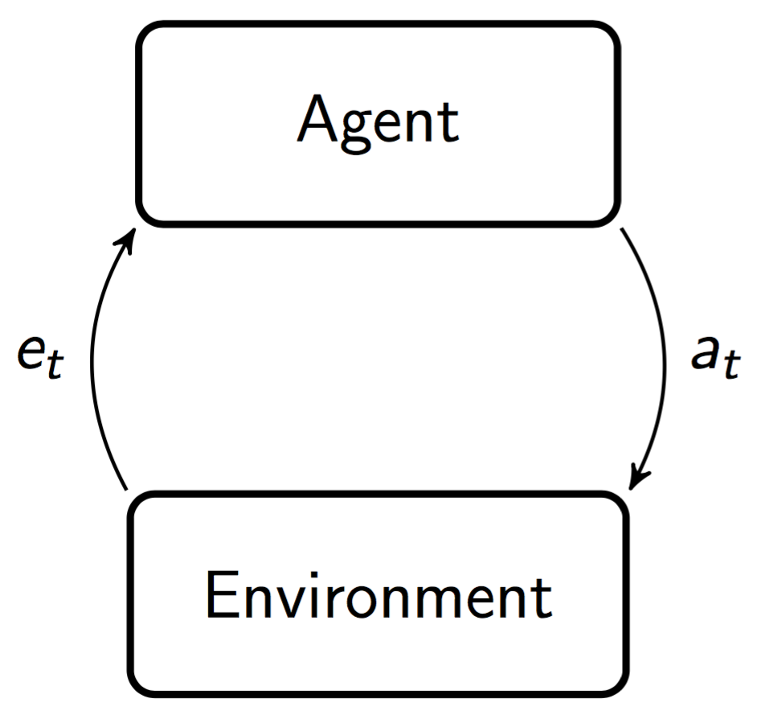

|
---
# Dispenser Gridworld
In this environment, there is one `Dispenser`
which probabilistically dispenses a reward of +100. Walking into a `Wall`
results in a penalty of -5. Otherwise, moving results in a penalty of -1. The percept space is the set of bit-strings of length 5, i.e. \\(\mathcal{E} = \mathbb{B}^5\\). Each bit corresponds to the nearest tile in the `left`, `right`, `up`, and `down` directions, and the agent's current tile. The bit is 1 if the tile is a `Wall` and 0 otherwise. The action space is given by
$$
\mathcal{A} = \lbrace{\mathtt{left,right,up,down,noop}\rbrace}.
$$
This environment is non-episodic, so once the agent finds the `Dispenser`, it should hang around there to collect more reward. The environment class \\(\mathcal{M}\\) is parametrized by the location of the dispenser:
$$
\mathcal{M} = \big\lbrace\nu\ :\ \mathtt{\nu.dispenserpos} = (m,n)\big\rbrace\_{(m,n)=(1,1)}^{(M,N)},
$$
where \\((M,N)\\) are the dimensions of the grid, and hence \\(\left|\mathcal{M}\right|=MN\\). Usually (unless we are simulating AI\\(\mu\\)), the agent will be initialized with a uniform prior over this model class, i.e.
$$
w\_\nu = \frac{1}{MN}\ \forall\ \nu\in\mathcal{M}.
$$
The agent's beliefs \\(\lbrace w\_\nu\rbrace\_{\nu\in\mathcal{M}}\\) are visualized by green shading
on each tile. Darker shading corresponds to higher probability. Finally, we have Roger the Robot, who represents our AI agent on the gridworld:

In the case of Thompson sampling, the agent periodically samples an environment \\(\rho\\) from its posterior belief distribution and uses the \\(\rho\\)-optimal policy. The red dot
represents the position of the dispenser in \\(\rho\\); the Thompson Sampling agent will chase the red dot around.
In the case of Thompson sampling, the agent periodically samples an environment \\(\rho\\) from its posterior belief distribution and uses the \\(\rho\\)-optimal policy. The red dot
represents the position of the dispenser in \\(\rho\\); the Thompson Sampling agent will chase the red dot around.
---
# Contents
* [Background](#background)
* [Agent-environment interaction](#agent-env)
* [Reinforcement...](#reinforcement)
* [...Learning](#learning)
* [AI\\(\xi\\)](#aixi)
* [Optimality](#optimality)
* [Agents](#agents)
* [Knowledge-seeking agents](#ksa)
* [BayesExp](#bexp)
* [Thompson Sampling](#ts)
* [Optimistic AIXI](#opt-aixi)
* [MDL Agent](#mdl)
* [DQN](#dqn)
* [Compress and Control](#cnc)
* [Implementation](#implementation)
* [JavaScript API](#api)
* [Runtime](#runtime)
* [References and further reading](#further-reading)
# Background
## Agent-environment interaction
In the standard [reinforcement learning] (RL) framework, the __agent__ and __environment__ play a turn-based game and interact in cycles ([Sutton & Barto, 1998]). At time/cycle/turn \\(t\\), the agent supplies the environment with an __action__ \\(a\_t\\). The environment then performs some computation and returns a __percept__ \\(e_t\\) to the agent, and the cycle repeats.

The actions live in an action space \\(\mathcal{A}\\), and the percepts live in a percept space \\(\mathcal{E}\\). We identify an agent with its __policy__, which in general is a distribution over actions \\(\pi(a\_t\lvert ae\_{<t})\\)
$$
\pi\ :\ \left(\mathcal{A}\times\mathcal{E}\right)^*\mapsto\varDelta\mathcal{A},
$$
where \\(^*\\) is the [Kleene star], and \\(\varDelta \mathcal{X}\\) is the set of probability measures over \\(\mathcal{X}\\). An environment is a distribution over percepts \\(\nu(e\_t\lvert ae\_{<t}a\_t)\\) with
$$
\nu\ :\ \left(\mathcal{A}\times\mathcal{E}\right)^*\times\mathcal{A}\mapsto\varDelta\mathcal{E}.
$$
The agent and environment interaction induces a distribution over __histories__ \\(\nu^\pi\\):
$$
\nu^\pi\left(ae\_{<t}\right) \stackrel{.}{=}\prod\_{k=1}^{t}\pi\left(a\_k\lvert ae\_{<t}\right)\nu\left(e\_k\lvert ae\_{<k}a\_k\right),
$$
which is conveniently expressed as a telescoping product by the [chain rule]. In the general setting, the environment is a [partially observable Markov decision process][POMDP] (POMDP). That is, there is some underlying (hidden) state space \\(\mathcal{S}\\), with respect to which the environment's dynamics are Markovian. The agent cannot observe this state directly, but instead receives (incomplete and noisy) percepts through its sensors. Therefore, the agent must learn and make decisions under uncertainty in order to perform well.
Notes:
* We're slightly abusing notation here: environments are _not_ joint distributions over actions and percepts, and so you should read \\(\nu(e\_t\lvert ae\_{<t}a\_t)\\) as shorthand for \\(\nu(e\_t\lvert e\_{<t} \lvert\lvert a_{1:t})\\); that is, a distribution over percepts conditioned on a sequence of past percepts, and in the context of a sequence of past actions given as _inputs_. The same holds for policies, except with actions and percepts reversed.
* We restrict ourselves to countable percept and action spaces. Although many (but not all) of the important results generalize to continuous spaces, we make this assumption for simplicity.
* For simplicity, we also assume that the action and percept spaces \\(\mathcal{A}\\) and \\(\mathcal{E}\\) are stationary; i.e. they are time-independent and fixed by the environment.
## Reinforcement...
Percepts consist of (__observation__, __reward__) pairs \\(e\_k = \left(o\_k,r\_k\right)\\), with integer-valued rewards such that
$$
\mathcal{E} = \mathcal{O}\times\mathbb{Z}.
$$
We make no further assumptions about the observation space \\(\mathcal{O}\\). A good example is the space of \\(M\times N\\)-pixel 8-bit RGB images used in the [Arcade Learning Environment][ALE] (ALE):
$$
\mathcal{O}_{\text{ALE}}=\mathcal{B}^{8\times M\times N\times 3},
$$
where \\(\mathcal{B}\stackrel{.}{=}\lbrace{0,1\rbrace}\\) is the binary alphabet. Now, introduce the __return__, which is the discounted sum of all future rewards:
$$
R\_t \stackrel{.}{=} \sum\_{k=t}^{\infty}\gamma\_k r\_k,
$$
where \\(\gamma\ :\ \mathbb{N}\mapsto[0,1]\\) is a discount function with convergent sum. Now, if our agent is rational in the [Von Neumann-Morgenstern][VNM] sense, it should maximize the expected return, which we call the __value__. The value achieved by policy \\(\pi\\) in environment \\(\nu\\) given history \\(ae\_{<t}\\) is defined as
$$
V^{\pi}\_{\nu}\left(ae\_{<t}\right)\stackrel{.}{=}\mathbb{E}^{\pi}\_{\nu}\left[\left.\sum\_{k=t}^{\infty}\gamma\_{k}r\_{k}\right|ae\_{<t}\right]
$$
This is often more conveniently expressed recursively:
$$
V^{\pi}\_{\nu}\left(ae\_{<t}\right) = \sum\_{a\_t\in\mathcal{A}}\pi(a\_t\lvert ae\_{<t})\sum\_{e\_t\in\mathcal{E}}\nu(e\_t\lvert ae\_{<t}a\_t)\Big[\gamma\_tr\_t+\gamma\_{t+1}V\_{\nu}^{\pi}(ae\_{1:t})\Big],
$$
which is often referred to as the [Bellman equation]. Now, let \\(\mu\\) be the true environment. The __optimal value__ is the highest value achieved by any policy in this environment:
$$
V\_{\mu}^{*}\stackrel{.}{=}\max\_{\pi}V\_{\mu}^{\pi}.
$$
Using the [distributive property] of \\(\max\\) and \\(\sum\\), we can unroll this into the __expectimax__ expression
$$
V\_{\mu}^{*}=\lim\_{m\to\infty}\max\_{a\_{t}\in\mathcal{A}}\sum\_{e\_{t}\in\mathcal{E}}\cdots\max\_{a\_{m}\in\mathcal{A}}\sum\_{e\_{m}\in\mathcal{E}}\sum\_{k=t}^{m}\gamma\_{k}r\_{k}\prod\_{j=t}^{k}\mu\left(e\_{j}\lvert ae\_{<j}a\_{j}\right).
$$
This can be viewed as just a generalization of [minimax] to stochastic environments/adversaries. In practice, when planning we approximate this computation with [Monte Carlo tree search] (MCTS).
We can now introduce our first theoretical [artificial general intelligent] (AGI) agent: the __informed agent AI__\\(\boldsymbol{\mu}\\). AI\\(\mu\\) is simply the (infeasible) \\(\boldsymbol{\mu}\\)__-optimal policy__:
$$
\pi^{\text{AI}\mu}\stackrel{.}{=}\arg\max\_{\pi}V\_{\mu}^{\pi}.
$$
## ...Learning
Clearly we don't know \\(\mu\\) _a priori_ in the general RL setting. Generically, there are two main approaches to learning in the context of RL: __model-based__ and __model-free__. They each make their own sets of assumptions:
* Model-free (e.g. [Q-Learning]) generally assume the environment is a finite-state MDP
* Model-based (e.g. __Bayesian learning__) assumes the __realizable case__.
The agents we'll be dealing with are all Bayesian.
## Bayesian reinforcement learning
Assume the realizable case: the true environment \\(\mu\\) is contained in some countable __model class__ \\(\mathcal{M}\\). Now, constructor a __Bayesian mixture__ over \\(\mathcal{M}\\): a [convex linear combination] of environments:
$$
\xi\left(e\_t\lvert ae\_{<t}a\_t\right)\stackrel{.}{=}\sum\_{\nu\in\mathcal{M}}w\_\nu \nu\left(e\_t\lvert ae\_{<t}a\_t\right).
$$
The weights \\(w\_\nu\equiv\Pr\left(\nu\lvert ae\_{<t}\right)\\) specify the agent's __posterior belief distribution__ over \\(\mathcal{M}\\). By [Cromwell's rule], we require further that the __prior__ weights \\(\Pr(\nu\lvert \epsilon)\\) lie in the interval \\((0,1)\ \forall \nu\in\mathcal{M}\\). Being 'Bayesian' simply means __updating__ these beliefs according to the product rule of probability:
$$
\Pr(\nu\lvert e\_t) = \frac{\Pr(e\_t\lvert \nu)\Pr(\nu)}{\Pr(e\_t)},
$$
which corresponds to performing the update at each cycle:
$$
w\_\nu\leftarrow\frac{\nu(e\_t)w\_\nu}{\xi(e\_t)}.
$$
## AI\\(\xi\\)
AI\\(\xi\\) is the __Bayes-optimal__ agent. That is, it is the policy that maximizes the \\(\xi\\)-expected return:
$$
\pi^{\text{AI}\xi}\stackrel{.}{=}\arg\max\_\pi V^\pi\_\xi.
$$
It is a universal, parameter-free Bayesian agent, whose behavior is completely specified by its model class \\(\mathcal{M}\\) and choice of prior \\(\lbrace w\_\nu\rbrace\_{\nu\in\mathcal{M}}\\). AI\\(\xi\\)'s big brother is [AIXI] ([Hutter, 2005]), which uses [Solomonoff's universal prior], which mixes over the model class of all computable probability measures:
$$
w\_{\nu} = 2^{-K(\nu)},
$$
where \\(K(\nu)\\) is the [Kolmogorov complexity] of \\(\nu\\). AIXI is hence the 'active' generalization of Solomonoff induction, which is the optimal (but incomputable) inductive learner. A computable approximation to AIXI is MC-AIXI-CTW ([Veness et al., 2011]), which uses the [Context Tree Weighting] (CTW) algorithm to approximate the induction component of AIXI.
## Exploration vs exploitation; optimality
The most central issue in reinforcement learning is the __exploration-exploitation dilemma__: TODO
It is now known that [Pareto optimality] is trivial in general environments, and that AIXI can be made to perform arbitrarily badly with a dogmatic prior ([Leike & Hutter, 2015]).
# Agents
## Knowledge-seeking agents
First generalize to Bayesian __utility agents__ that have, in addition to a belief distribution \\(\xi\\), a utility function
$$
u(e\_t\lvert\lvert a\_t)
$$
which takes the place of the agent's reward signal. Now, the agent becomes an __expected utility maximizer__, with corresponding value function:
TODO
Generically, knowledge-seeking agents ([Orseau, 2011]; [Orseau et al., 2013]) get utility from gaining knowledge, which in the Bayesian context corresponds to reducing the uncertainty in their posterior belief distribution.
* Square-KSA:
$$
u(e\_t\lvert\lvert a\_t) = -\xi(e\_t\lvert ae\_{<t})
$$
* Shannon-KSA:
$$
u(e\_t\lvert\lvert a\_t) = \log\left(\xi(e\_t\lvert ae\_{<t})\right)
$$
* KL-KSA:
TODO
## BayesExp
TODO
## Thompson Sampling
Define the \\(\varepsilon\\)-effective horizon:
$$
H\_{t}^{\gamma}(\varepsilon) \stackrel{.}{=} \min\left\lbrace m\ :\ \sum\_{k=m}^{\infty}\gamma\_{t+k}\leq\varepsilon\right\rbrace,
$$
which is the minimum number of cycles ahead one needs to consider in order to accumulate a value of \\((1-\varepsilon)V\_{\nu}^{\pi}\\), for some \\(\varepsilon>0\\). Thompson Sampling ([Leike et al., 2016]) has a simple algorithm: every \\(H\_{t}^{\gamma}\\) steps, sample an environment \\(\rho\\) from the posterior belief distribution \\(w\_{\nu}\\), and use the \\(\rho\\)-optimal policy, re-sample, and repeat.
## Optimistic AIXI
Optimistic AIXI ([Sunehag & Hutter, 2015]).
TODO
## MDL Agent
TODO
## Policy Gradients/Deep Q-Learning
See [Andrej Karpathy]'s excellent [REINFORCEjs] demo, on which this demo is modelled!
## Compress and Control
TODO
---
# Implementation
## JavaScript API
```
class Environment {
// ...
generatePercept() {
//
}
perform(a) {
//
}
conditionalDistribution(e) {
//
}
}
class Agent {
// ...
selectAction(e) {
//
}
update(a,e) {
//
}
}
```
## Runtime
Demos containing Bayesian agents have a time complexity of
TODO
---
## References & Further Reading
[reinforcement learning]: https://en.wikipedia.org/wiki/Reinforcement_learning
[Kolmogorov complexity]: https://en.wikipedia.org/wiki/Kolmogorov_complexity
[Q-Learning]: https://en.wikipedia.org/wiki/Q-learning
[AIXI]: https://en.wikipedia.org/wiki/AIXI
[Solomonoff's universal prior]: http://www.scholarpedia.org/article/Algorithmic_probability
[VNM]: https://en.wikipedia.org/wiki/Von_Neumann%E2%80%93Morgenstern_utility_theorem
[minimax]: https://en.wikipedia.org/wiki/Minimax
[Kleene star]: https://en.wikipedia.org/wiki/Kleene_star
[convex linear combination]: https://en.wikipedia.org/wiki/Convex_combination
[Cromwell's rule]: https://en.wikipedia.org/wiki/Cromwell%27s_rule
[Bellman equation]: https://en.wikipedia.org/wiki/Bellman_equation
[Monte Carlo tree search]: https://en.wikipedia.org/wiki/Monte_Carlo_tree_search
[distributive property]: https://en.wikipedia.org/wiki/Distributive_property
[POMDP]: https://en.wikipedia.org/wiki/Partially_observable_Markov_decision_process
[chain rule]: https://en.wikipedia.org/wiki/Chain_rule_(probability)
[ALE]: http://www.arcadelearningenvironment.org/
[artificial general intelligent]: https://en.wikipedia.org/wiki/Artificial_general_intelligence
[Context Tree Weighting]: https://cs.anu.edu.au/courses/comp4620/2015/slides-ctw.pdf
[Pareto optimality]: https://en.wikipedia.org/wiki/Pareto_efficiency
[Andrej Karpathy]: http://cs.stanford.edu/people/karpathy/
[REINFORCEjs]: http://cs.stanford.edu/people/karpathy/reinforcejs/
[Hutter, 2005]: http://www.hutter1.net/ai/uaibook.htm
[Leike & Hutter, 2015]: http://jmlr.org/proceedings/papers/v40/Leike15.pdf
[Leike et al., 2016]: https://arxiv.org/abs/1602.07905
[Veness et al., 2011]: https://www.jair.org/media/3125/live-3125-5397-jair.pdf
[Orseau, 2011]: http://www.agroparistech.fr/mmip/maths/laurent_orseau/papers/orseau-ALT-2011-knowledge-seeking.pdf
[Orseau et al., 2013]: http://www.hutter1.net/publ/ksaprob.pdf
[Sutton & Barto, 1998]: https://webdocs.cs.ualberta.ca/~sutton/book/the-book.html
[Sunehag & Hutter, 2015]: http://jmlr.org/papers/volume16/sunehag15a/sunehag15a.pdf
|